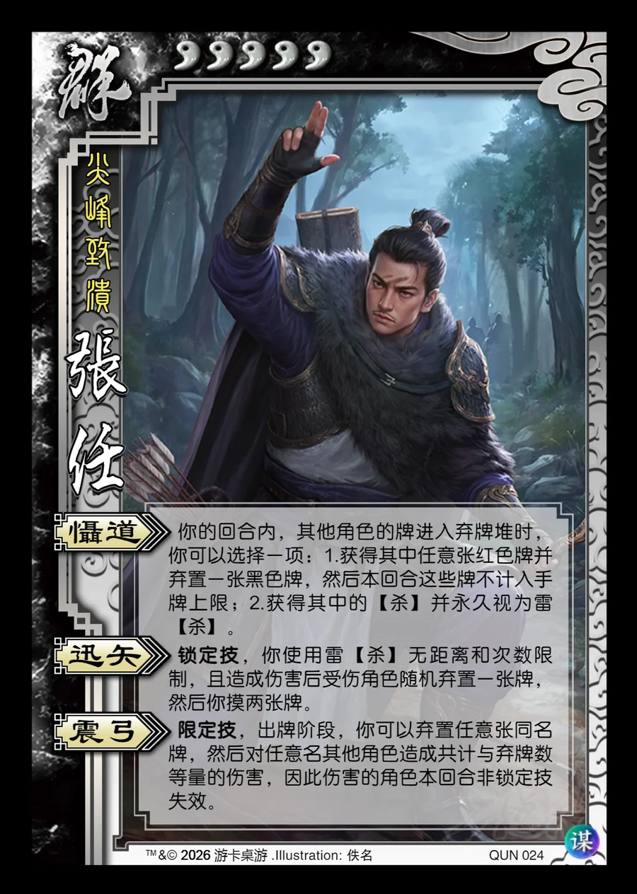

点击卡面查看大图
群
张任
♥5尖峰致溃
慑道
你的回合内，其他角色的牌进入弃牌堆时，你可以选择一项：1.获得其中任意张红色牌并弃置一张黑色牌，然后本回合这些牌不计入手牌上限；2.获得其中的【杀】并永久视为雷【杀】。
迅矢锁定技
锁定技，你使用雷【杀】无距离和次数限制，且造成伤害后受伤角色随机弃置一张牌，然后你摸两张牌。
震弓限定技
限定技，出牌阶段，你可以弃置任意张同名牌，然后对任意名其他角色造成共计与弃牌数等量的伤害，因此伤害的角色本回合非锁定技失效。